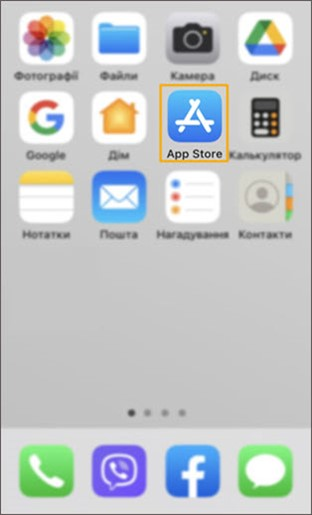
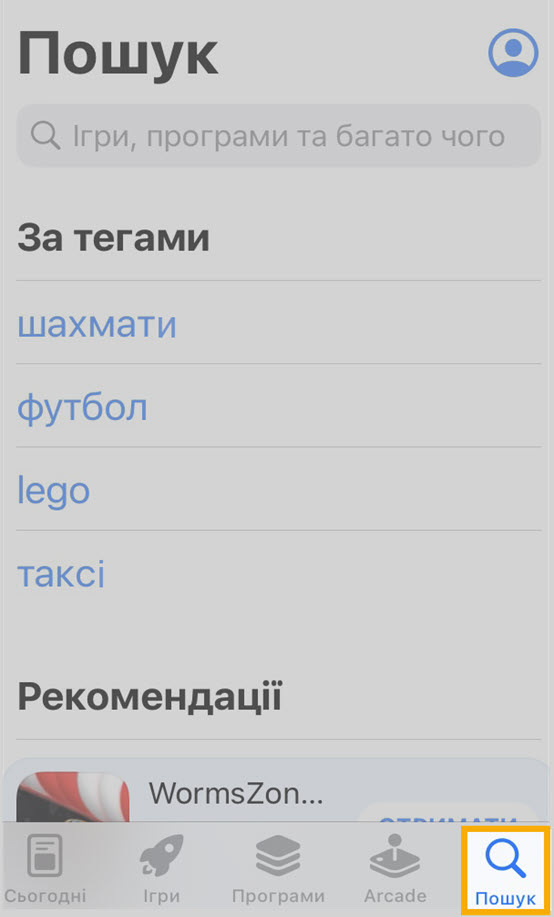
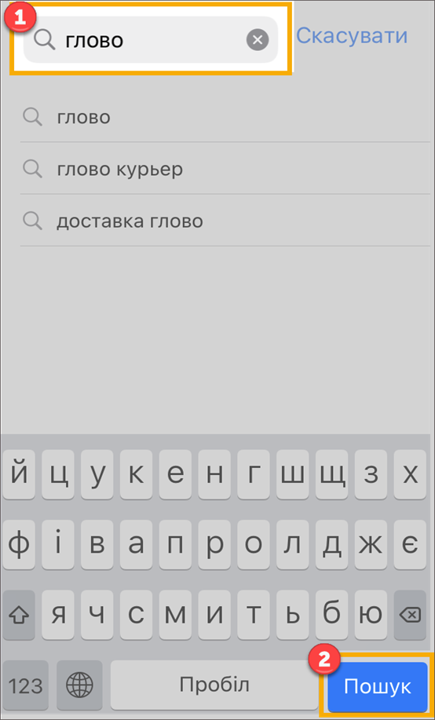
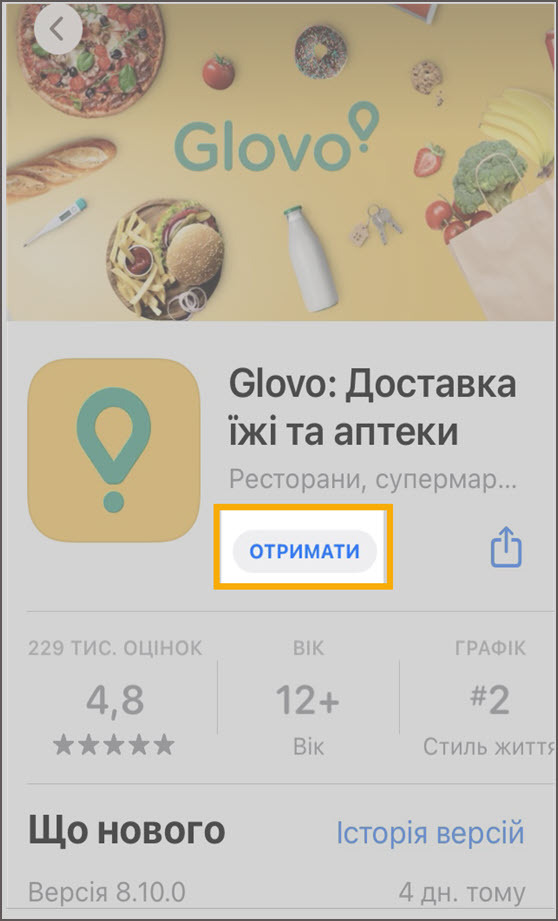
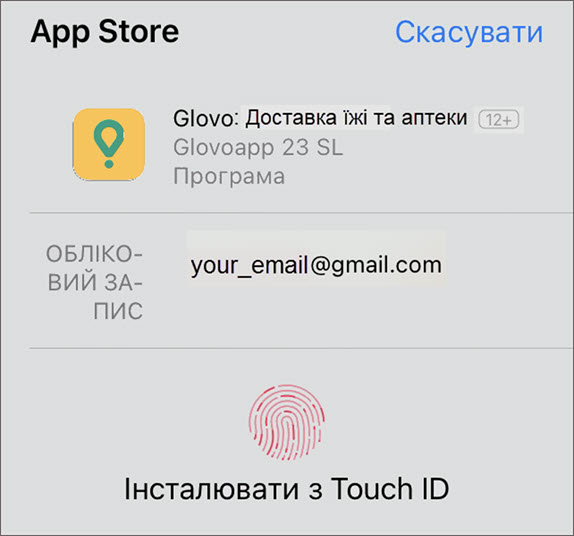
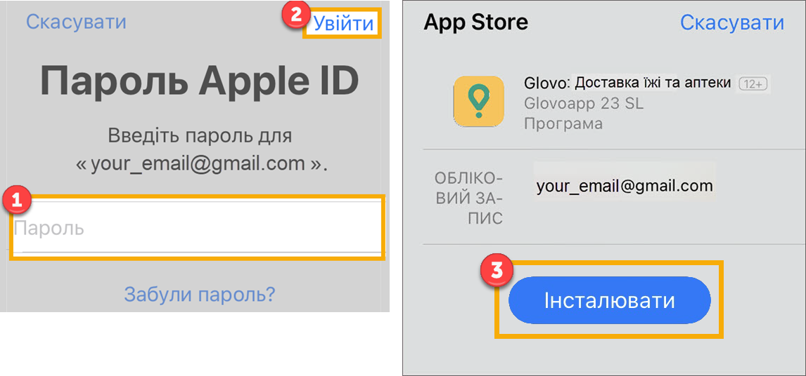
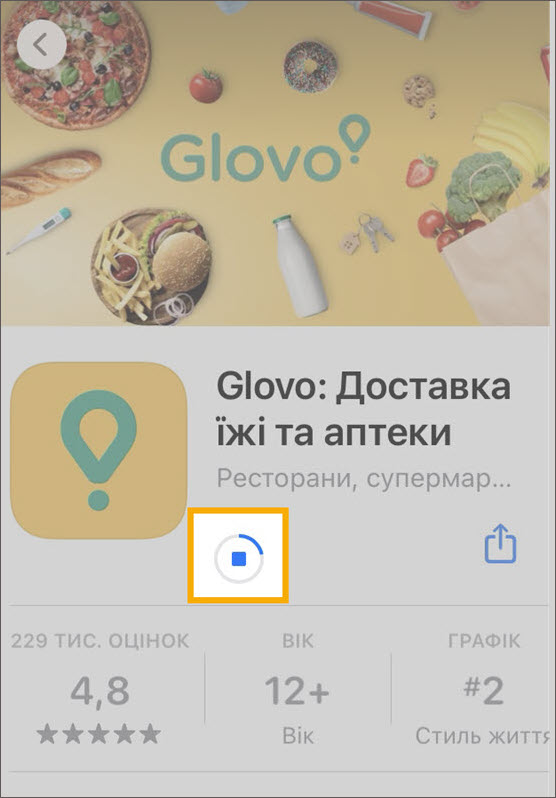
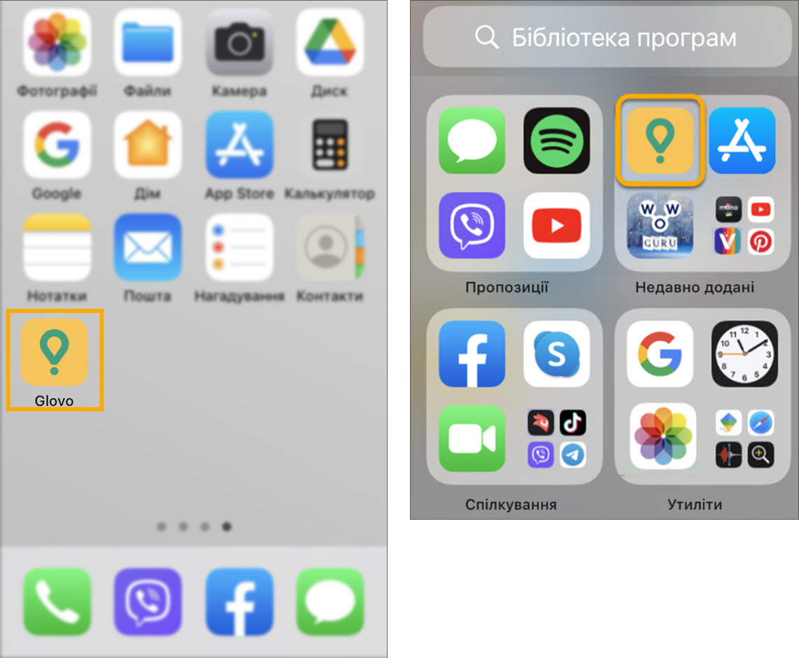

-
На початковому екрані відкрийте програму App Store, торкнувши відповідну піктограму. Якщо App Store відсутній, виконайте інструкції
Служби підтримки Apple

-
У нижньому правому куті екрана торкніть Пошук
.

-
У верхній частині екрана торкніть поле Пошук і введіть назву застосунку кирилицею (“глово”), або латиницею (“glovo”).Тоді у нижньому правому куті клавіатури торкніть кнопку Пошук.
Застосунок Glovo відкрився.

- Праворуч від назви застосунку торкніть Отримати.
Або можна торкнути будь-яке зображення застосунку та перейти на його сторінку, щоб більше дізнатись про Glovo, а тоді торкнути Отримати праворуч від логотипу Glovo.

-
Коли буде запропоновано, використайте Touch ID або Face ID і застосунок почне завантажуватись.

Якщо Touch ID або Face ID не встановлено для App Store, або iPhone не підтримує їх, виконайте наведені нижче дії:
- Введіть пароль Apple ID.
- У верхньому правому куті торкніть Увійти.
- Торкніть Інсталювати.

Примітка.
- Якщо ви забули пароль Apple ID, торкніть відповідний напис, і виконуйте вказівки на екрані.
- Зачекайте допоки застосунок завантажиться. Процес завантаження відображається в колі праворуч від логотипу Glovo.

Застосунок відкриється на початковому екрані або в бібліотеці програм.
